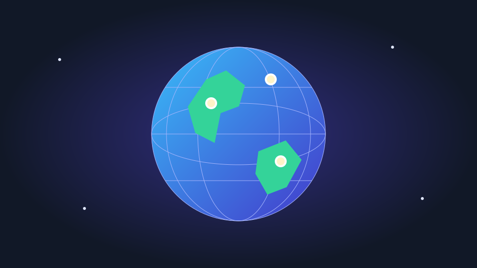

Globe Gallery
A personal web development project combining photography, location tagging, and interactive 3D visualization. Capture or upload photos and turn travel memories into explorable markers on a globe.
JavaScriptHTMLCSSSupabaseIndexedDBWebGLGeolocation API
View on GitHub →Project Overview
Globe Gallery connects a searchable photo gallery with an interactive 3D globe. Each memory brings together a photo, caption, date, place name, and geographic coordinates, making personal experiences easy to revisit through either images or locations.
The project demonstrates browser API integration, structured local data management, and an interactive interface that connects visual content with geographic context.
Key Features
- Interactive 3D globe: explore geographic markers and select a location to revisit its associated memories.
- Searchable photo gallery: browse dated memories and find photos using captions and place names.
- Camera capture and uploads: take photos with a countdown and front/rear camera switching, or import existing images.
- GPS tagging: attach the current location through the Geolocation API or enter place names and coordinates manually.
- Data storage: Supabase provides the project database, with IndexedDB supporting local photo storage in the browser.
- Backup management: export and import complete JSON backups, and download individual photos.
Technical Details
Frontend: HTML, CSS, and JavaScript provide a responsive interface for capturing, organizing, and exploring memories on desktop and mobile.
Visualization: a WebGL-based 3D globe library connects latitude and longitude coordinates to interactive memory markers.
Data management: Supabase serves as the database for project data, while IndexedDB supports browser-local photo storage. JSON export/import provides backup management.
Browser integration: camera access and the Geolocation API support photo capture and optional GPS detection. These features require user permission and HTTPS or localhost.
Connectivity: Supabase database access and the CDN-hosted globe library and Earth texture require an internet connection.